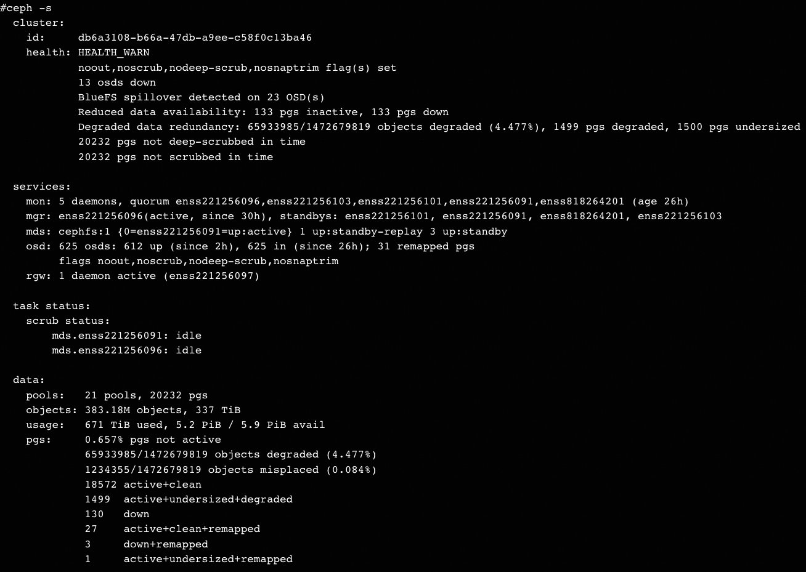
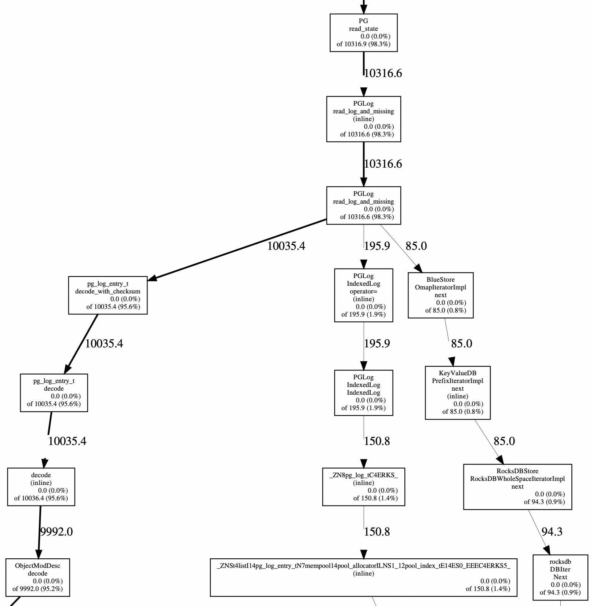
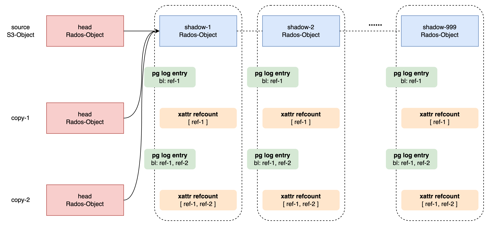

记录一次跨Bucket拷贝S3-Object引发的内存耗尽问题，版本是ceph-14.2.11。
案发现场 (1)
在Ceph-RGW上，PUT一个4G的S3-Object(multiupload应该也是一样的效果)，然后以它做为source跨bucket拷贝几千甚至上万次(具体次数甚至数量级不一定准确，是测试同学做的，总之很多次)。OSD发生重启，recover过程中占用太多内存(单OSD最高占10G)，导致系统内存耗尽，好几台server上都有一些OSD无法启动。最终结果是ceph集群不可用。

逆向排查 (2)
Heap profiling结果如下：

可见，是pg_log_entry_t.mod_desc.bl占了很多heap空间：
1 | struct pg_log_entry_t { |
在src/osd/PGLog.h中read_log_and_missing(...)函数添加打印:
1 | ldpp_dout(dpp, 1) << "read_log_and_missing " << e << " coll=" << ch->cid << " bl_length=" << e.get_bl_length() << dendl; |
最终打印出：
1 | 2024-07-02 ... modify 24:4f0e2b5e:::{bucket-id}__shadow_.3wKOeMc4Qs527pX0EglG9LYUnYCZje6_937:head by ... coll=24.f2s5_head bl_length=17658 |
把bl_length加起来有9G之多，所以确认是pg_log_entry_t.mod_desc.bl占的内存。并且：
- 占内存多的都是modify类型的pg log entries；其它类型，如delete, create都很小；
- 同一个Rados-Object的modify log entries的
bl_length逐渐增大；上面的{bucket-id}__shadow_.3wKOeMc4Qs527pX0EglG9LYUnYCZje6_937Rados-Object最后一次modify的log entry的bl_length是115222字节。
看pg_log_entry_t.mod_desc.bl可能存什么东西:
1 | class ObjectModDesc { |
有3个比较可疑，分别是setattrs()，update_snaps()和rollback_extents()，其它都是存一些id, size, version之类，不会占太多空间。由于没有snap之类的操作，所以怀疑setxattrs().
1 | # rados -p default.rgw.buckets.data.ec listxattr {bucket-id}__shadow_.3wKOeMc4Qs527pX0EglG9LYUnYCZje6_937 |
可见refcount attr的大小是114785字节，和上面的115222非常接近，应该是refcount attr之外，pg_log_entry_t.mod_desc.bl中还包含op类型, version等额外信息。
解析后看出，refcount不是一个计数，而是记录谁引用了自己(自己是一个Rados-Object)。
1 | # ceph-dencoder type obj_refcount import refcount-val.bin decode dump_json |
找测试同学要到source S3-Object的name，查它的信息：
1 | # rados -p default.rgw.buckets.data.ec getxattr {bucket-id}_{s3-object-name} user.rgw.manifest > manifest.bin |
可见，那些bl很大的pg log entries的目标Rados-Object都是这个S3-Object的shadow分片，因为.3wKOeMc4Qs527pX0EglG9LYUnYCZje6_是shadow分片的prefix，且{bucket-id}也匹配。
至此可以断定此次故障是跨bucket copy S3-Object导致的。
正向分析 (3)
跨bucket copy S3-Object是class RGWCopyObj_ObjStore_S3完成的，主要逻辑在RGWCopyObj::execute()中(src/rgw/rgw_op.cc)。
- 对于小文件，只有一个head object (Rados-Object)，直接拷贝全量数据；
- 对于大文件，包含head object和一到多个tail/shadow objects (Rados-Object)，若满足条件(同pool且placement规则相同)，则只拷贝head object，所有tail/shadow objects通过引用实现共享。
- 所以，tail/shadow Rados-Object上要记录对自己的引用。
理论上，一个计数就可以，attr的名字也叫做refcount，可实现上，里面记录的是这样的条目；并且oid也不是object id，而是拷贝操作的req_id。猜测应该是实现偏离了设计。这里就把这些条目叫做ref-1, ref-2, ...
1 | { |
- 对于一个大对象，比如4G的对象，有999个shadow/tail object，它们都要记录refcount。
- 记录refcount本身并不可怕，因为这东西是落在磁盘上的(rocksdb –> bluefs)；
- 可怕的是，不断修改refcount。导致本次事故的case正是这样，多次拷贝同一个source S3-object，所以那些tail/shadow object的refcount不断被修改:
{ref-1} -> {ref-1, ref-2} -> {ref-1, ref-2, ref-3} -> ...； - 因为修改就会产生pg log entry；并且对attr的修改，是要整个保存在pg log entry中的。对比data的修改：data不存在于pg log entry中。
- 这就会导致pg log entry的size逐渐增大，例如第1000次拷贝，pg log entry中要记录：
{ref-1, ref-2, ref-3, ..., ref-1000}；可能就有几十KB了；第1001次拷贝更大，以此类推。这也和第2节看到的相符：bl_length=17658, 17719, 17780, 17841, …, 115222. - 正常情况下pg log要保留在内存中一部分；重启recover时也要读到内存。所以导致内存耗尽。

处理 (4)
现在陷入一个死锁：
- 要回收内存，就需要PG trim log；
- 要PG trim log就要PG恢复到clean状态；
- 要PG恢复到clean状态，就要OSD起来；
- 要OSD起来，就需要足够的内存；
- …
尝试把OSD的osd_max_pg_log_entries和osd_min_pg_log_entries都调小；这样clean的PG就trim了一些log，回收了一部分内存，起来几个OSD，再有少量PG恢复到clean，再trim log，……；这个过程耗时很久，迁移也不能太快，否则又占用太多内存导致OOM。
几天之后，实在等不及，就接受丢少量数据的事实，把剩下几个OSD mark lost了。其实也可以尝试把一个OSD mark lost，这时会有少量PG恢复clean，再trim log，再尝试拉起其它OSD。总之，思路是打破死锁。
恢复之后，OSD占用内存还是很大。这时可以大量写入新的对象(正常写)，目的是把那些size很大的pg log entries淘汰掉：PG健康的时候，最多保留osd_max_pg_log_entries条。
以后如何规避呢？一个思路是限制同一个source S3-Object被拷贝的次数。注意：10000个source S3-Object每个被拷贝1次和1个source S3-Object被重复拷贝10000次是不等价的：虽然产生的pg log entry的个数是一样的，但前者pg log entry的size不会累积，所以比较小；后者会累积，所以很大。